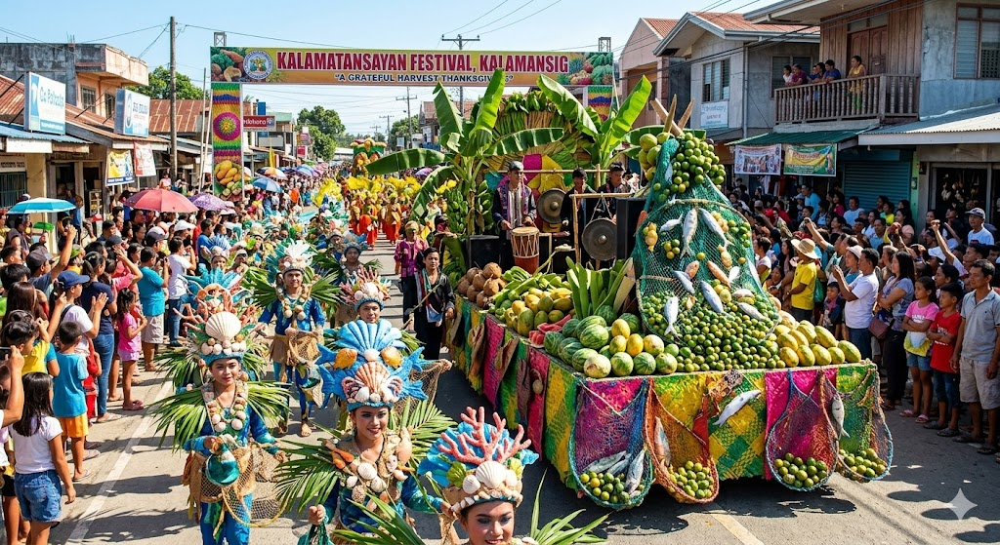
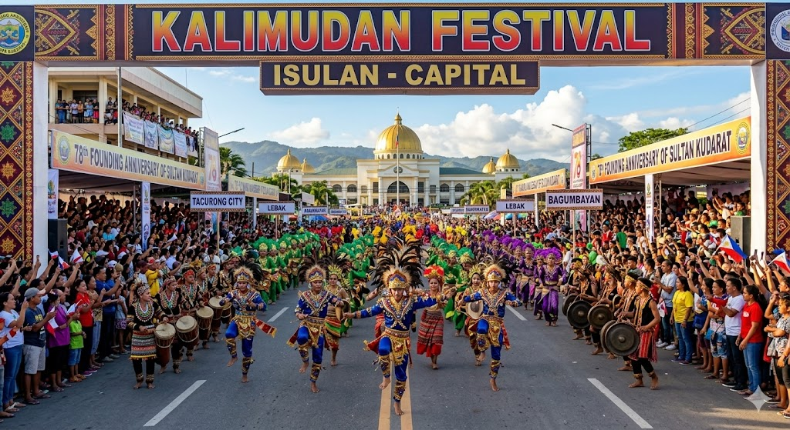
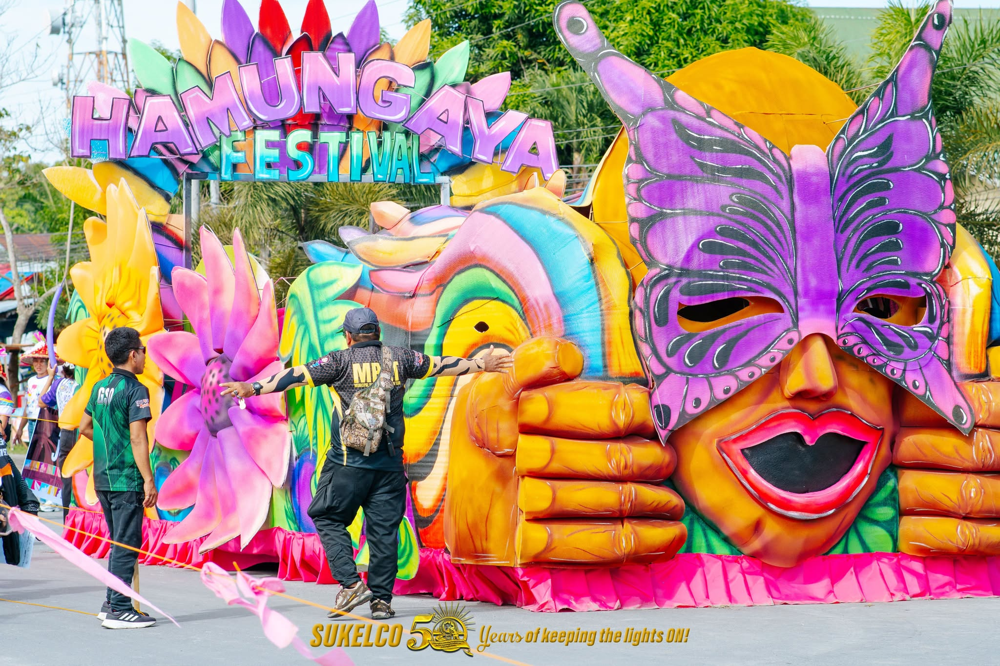
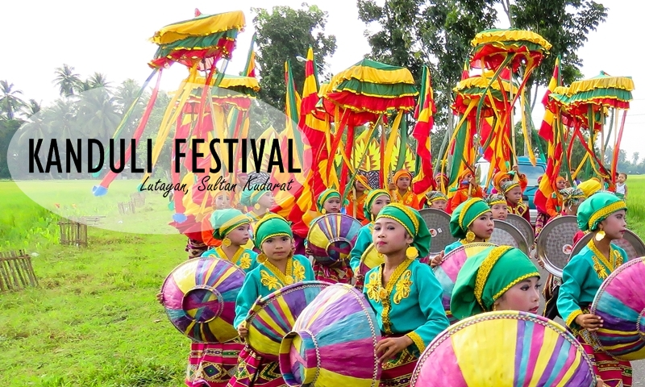
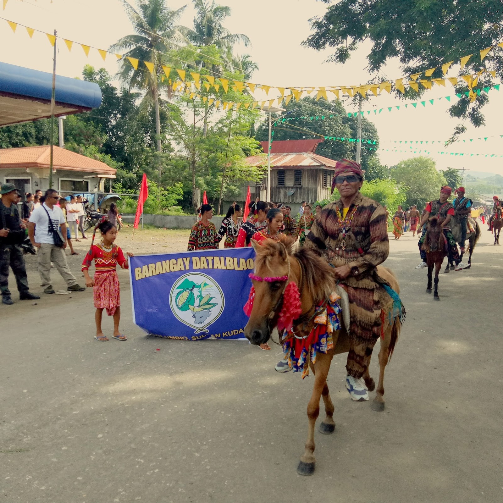
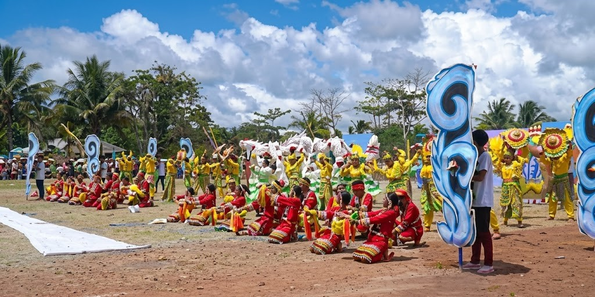
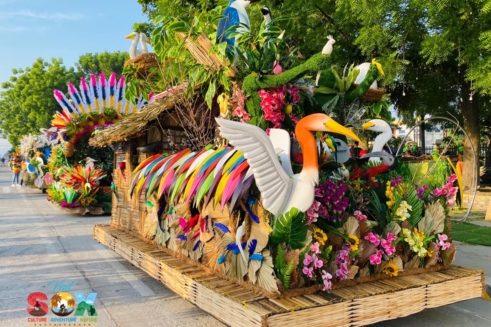
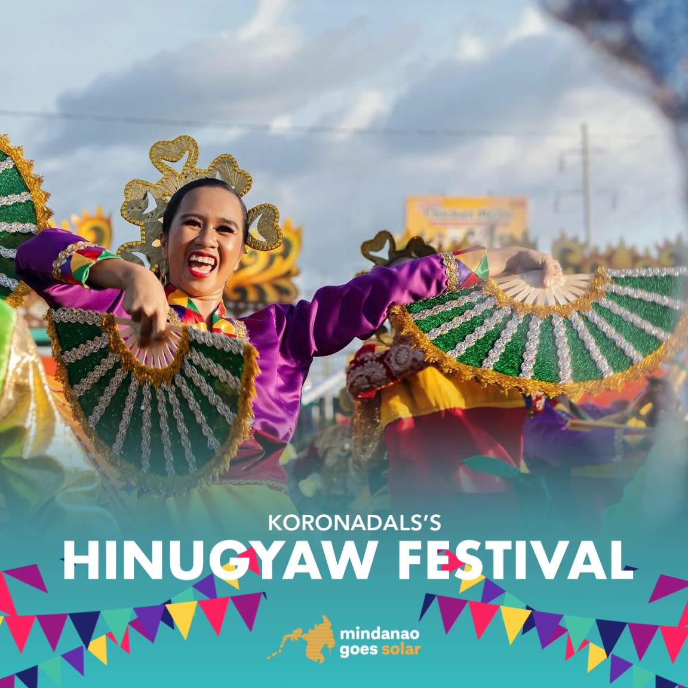

Talakudong Festival
Tacurong City
The Talakudong Festival is a historical cultural celebration showcased through a competitive street dancing exhibition. Performers wear colorful traditional headgear called "Kudong".

Kalamatansayan Festival
Kalamansig
A vibrant and grateful harvest Thanksgiving festival focused on marine resource abundance and local agricultural assets highlighting colorful street pageantry.

Kalimudan Festival
Isulan (Provincial Capital)
The grandest annual cultural gathering and founding anniversary celebration of Sultan Kudarat. It features spectacular street dancing and cultural showcases from different towns.

Hamungaya Festival
Isulan
Isulan's municipal festival celebrating a bountiful harvest, abundance, and prosperity with local agricultural showcases and cultural performances.

Bansadayaw Festival
Bagumbayan
A week-long celebration showcasing the municipality’s diverse tri-people culture through agro-trade fairs, cultural presentations, and lively street pageantry.

Kanduli Festival
Lutayan
Deeply rooted in Maguindanaoan culture, this festival focuses on a traditional ritual offering and banquet expressing gratitude for peace, unity, and an abundant harvest.

Hinabyog Festival
Esperanza
Symbolizing the resilience of the community through its swaying motion, this festival highlights the town's agricultural bounty, deep cultural harmony, and vibrant street dance showdowns.

Kawayan Festival
Columbio
A celebration of the abundance of bamboo, featuring creative displays of bamboo crafts alongside harmonious traditional dances from the Blaan, Maguindanaoan, and Christian communities.

Kalilang / Sanufe Festival
Palimbang
An annual cultural celebration that honors the heritage of the Dulangan Manobos, highlighting themes of unity, communal planting traditions, and thanksgiving offerings.

Sultan Kudarat Bird Festival
Tacurong City
An eco-tourism celebration dedicated to the preservation of the Baras Bird Sanctuary, featuring bird-watching tours, environmental forums, and conservation art.

Hinugyaw Festival
Lebak
A festival celebrating "jubilation" and unity among the Christian, Muslim, and indigenous tribes of Lebak, brought together by a shared thanksgiving for their harvests.